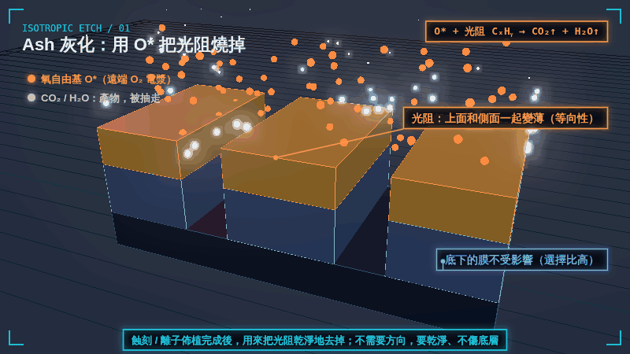
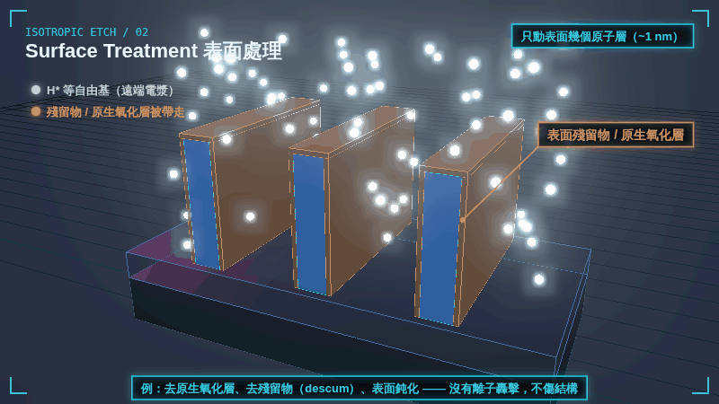
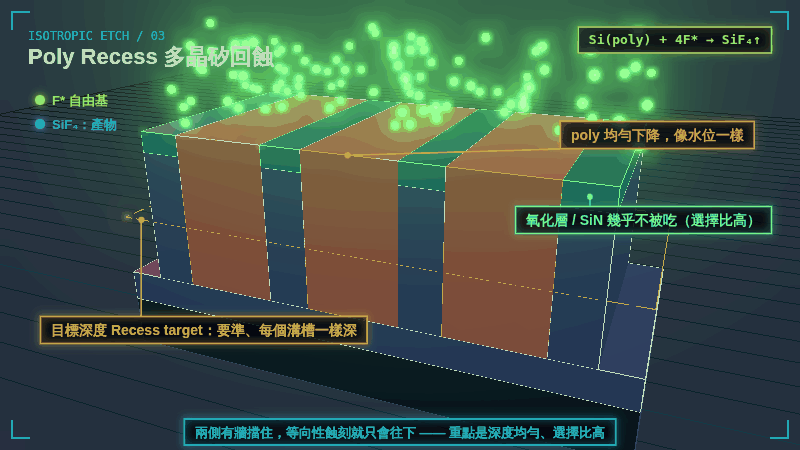
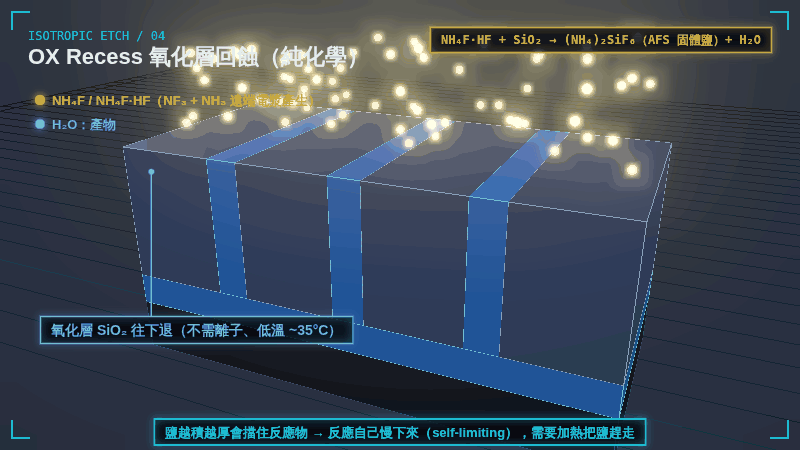
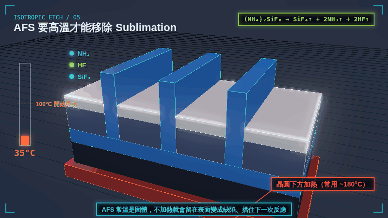

電漿蝕刻 Plasma Etching →
RF、鞘層、等向性 vs 非等向性、選擇比與 Nanosheet 應用。
ISOTROPIC ETCH FAMILY / 3D GIF
等向性蝕刻不靠離子定方向，而是靠自由基或化學反應「四面八方」地吃。它不是用來刻細線，而是用在要乾淨、均勻、不傷結構的地方。這裡用 5 張 3D 動畫 GIF，分成兩大類介紹：用遠端電漿自由基的 Ash、Surface Treatment、Poly Recess，以及純化學的 OX Recess 與它一定要做的 AFS 高溫移除。
OVERVIEW
| 類型 | 製程 | 反應物 | 吃掉什麼 | 產物 |
|---|---|---|---|---|
| 自由基蝕刻 Radical etch | Ash 灰化 | O* | 光阻（有機物） | CO₂、H₂O（氣體） |
| Surface Treatment 表面處理 | H*、N*、O* 等 | 表面幾個原子層、殘留物 | 依處理而定（氣體） | |
| Poly Recess 多晶矽回蝕 | F* | 多晶矽 | SiF₄（氣體） | |
| 純化學蝕刻 Chemical etch | OX Recess 氧化層回蝕 | NH₄F / NH₄F·HF | SiO₂ | AFS 固體鹽（留在表面） |
| AFS 高溫移除 | 加熱 > 100°C | AFS 鹽 | SiF₄、NH₃、HF（氣體） |
共同點：晶圓上沒有離子轟擊（遠端電漿 + 過濾、晶圓不加偏壓），所以低損傷、選擇比高、會均勻地吃所有露出來的表面。想了解離子是怎麼被濾掉的，可以看 電漿蝕刻 Plasma Etching 的 GIF 04B。
PAGE 1 / RADICAL

用遠端 O₂ 電漿產生的氧自由基 O*，把有機的光阻（CₓHᵧ）「燒」成 CO₂ 和 H₂O 氣體抽走。光阻從上面和側面同時變薄，是典型的等向性反應。
| 反應 | O* + CₓHᵧ → CO₂↑ + H₂O↑ |
|---|---|
| 吃什麼 | 光阻、有機殘留物 |
| 不吃什麼 | 氧化層、氮化層、矽（選擇比高） |
| 什麼時候用 | 蝕刻或離子佈植完成後去光阻 |
PAGE 2 / RADICAL

不是要挖深，而是只處理表面幾個原子層：用 H*、N* 等自由基帶走原生氧化層和殘留物，或讓表面鈍化。因為是自由基、沒有離子轟擊，頂部和側壁會被一致地處理（共形），結構不受損傷。
| 反應 | 依目的而定：H* 還原 / 帶走殘留，N* 氮化，O* 去有機物 |
|---|---|
| 深度 | 約 1 nm 以內 |
| 重點 | 共形、一致、無損傷 |
| 什麼時候用 | 沉積或磊晶前的表面準備、descum、介面處理 |
PAGE 3 / RADICAL

溝槽填滿多晶矽之後，用 F* 等自由基把 poly 均勻地往下吃到目標深度。因為兩側有氧化層 / SiN 牆擋住，等向性蝕刻在溝槽裡就像水位下降一樣只往下。重點是深度要準、每個溝槽一樣深，而且不能吃到旁邊的牆。
| 反應 | Si(poly) + 4F* → SiF₄↑ |
|---|---|
| 吃什麼 | 多晶矽 |
| 不吃什麼 | 氧化層、SiN（選擇比高） |
| 重點 | 深度控制、均勻度（loading 小） |
PAGE 4 / PURE CHEMICAL

純化學的乾式蝕刻：NF₃ + NH₃ 在遠端電漿中產生 NH₄F / NH₄F·HF，在低溫（約 35°C）下和 SiO₂ 反應，把氧化層變成固態的鹽 (NH₄)₂SiF₆（AFS）。晶圓上沒有離子、也不需要電漿直接接觸，對 Si 和 SiN 的選擇比很高，常用來把 STI 氧化層往下退、露出鰭（fin reveal）。
| 反應 | NH₄F·HF + SiO₂ → (NH₄)₂SiF₆（固體）+ H₂O |
|---|---|
| 吃什麼 | SiO₂ |
| 不吃什麼 | Si、SiN（選擇比高） |
| 特性 | 鹽層變厚會擋住反應 → 自我限制（self-limiting） |
PAGE 5 / PURE CHEMICAL

OX recess 反應完，氧化層變成的 AFS 鹽還留在表面。AFS 在常溫是固體，必須把晶圓加熱到 100°C 以上（常用約 180°C），讓它直接昇華成 SiF₄、NH₃、HF 氣體抽走。如果沒有移除，鹽會殘留成缺陷，也會擋住下一次反應；需要更深的 recess 時，就重複「低溫反應 → 高溫昇華」的循環。
| 反應 | (NH₄)₂SiF₆ → SiF₄↑ + 2NH₃↑ + 2HF↑ |
|---|---|
| 溫度 | > 100°C 開始昇華，常用約 180°C |
| 沒移除會怎樣 | 殘留缺陷、擋住下一次反應 |
| 流程 | 低溫反應 → 高溫昇華，可重複循環 |
RELATED
RF、鞘層、等向性 vs 非等向性、選擇比與 Nanosheet 應用。
Nanosheet 製程中的 fin reveal、SiGe 通道釋放都用到等向性蝕刻。
動畫為教學用示意：粒子數量、厚度、溫度與反應速度都經過簡化，不是特定機台或製程的規格。網頁上顯示的是 800×450 的預覽；按「下載 1080P GIF」可取得 1920×1080 的原檔，循環播放、第一格就是完整畫面，可直接放進簡報。